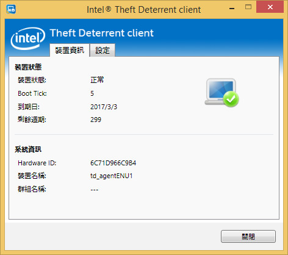
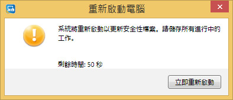
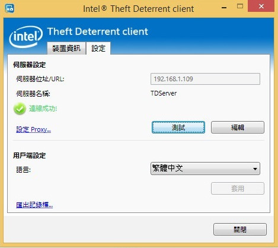
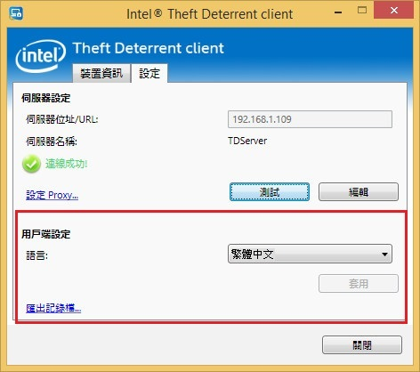
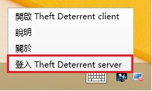

檢視和驗證 Theft Deterrent client 狀態
若要檢視或驗證用戶端的狀態和設定，請按一下桌面上的 Theft Deterrent client 應用程式圖示 來開啟用戶端。

在裝置資訊 頁面上，檢查 用戶端狀態表 中的狀態圖示。如果看到錯誤訊息，請參閱錯誤訊息表。
裝置資訊頁面上會顯示下列資訊：
裝置狀態 |
|
裝置狀態 |
用戶端的狀態。 |
Boot Tick |
十六進位號碼，在用戶端成功從伺服器套用套件後，這個號碼就會加 1。 |
到期日 |
裝置將從這個日期開始鎖定。 |
剩餘週期 |
裝置在被鎖定之前，您可以重新啟動裝置或從睡眠或休眠中還原裝置的次數。 |
系統資訊 |
|
Hardware ID |
每個裝置獨一無二的 12 個字元字串。 |
裝置名稱 |
裝置的電腦名稱 。 |
群組名稱 |
此裝置在伺服器中所屬之學校或地區的名稱。 |
初次設定與啟用
一般而言，此用戶端在原廠中預設為預先啟用。如果您的用戶端已啟用，您可以略過本節。
為確保您的用戶端已啟用，您可以
檢查用戶端圖示 ，確認用戶端不是處於 非使用中
 狀態。
狀態。
如果您的用戶端尚未啟用，請遵循下列步驟向伺服器啟用您的用戶端：
1. 確認用戶端已連線到伺服器 。啟用要求會自動傳送到伺服器。
2. 在伺服器核准您的啟用要求後，您的裝置上會彈出重新開機對話方塊。 此對話方塊包含一個從 60 秒開始倒數計時的計時器，系統將在 60 秒後自動重新開機。

在啟用過程中，伺服器會設定用戶端的 到期日 和剩餘週期
，以便啟用 Theft Deterrent 機制。用戶端一旦啟用，即可自動運作，無需使用者介入。您可以透過狀態圖示
 來驗證。
來驗證。
設定連線設定
一般來說，用戶端的連線設定預設在原廠已預先設定。如果這些設定已預先設定，您可以略過本節。
如果沒有，您可以手動設定連線設定，來確保用戶端與伺服器進行通訊。請遵循下列步驟：
1. 選取設定 索引標籤，然後按一下 編輯 按鈕。
2. 如果顯示快顯視窗，請輸入用戶端密碼，然後按一下確定。如果您沒有密碼，請聯絡指定的支援人員。
3. 在伺服器位址/URL 欄位中，輸入伺服器的 IP 位址或 URL，然後按一下儲存。
4. 如果您需要設定 Proxy 以存取伺服器，請按一下設定 Proxy 連結並選取所需的設定選項：
a. 如果作業系統中已設定 Proxy 伺服器位址，請選取使用系統 Proxy 設定。反之，請選取手動 Proxy 組態，然後輸入伺服器位址和通訊埠號碼。
b. 如果需要 Proxy 驗證，請輸入 Proxy 伺服器的使用者名稱和密碼，然後按一下 然後按一下確定。
5. 按一下測試按鈕來測試連線。
a. 如果顯示「連線成功!」訊息，表示用戶端很快將連線到伺服器。無需採取進一步動作。
b. 如果顯示「連線失敗」或「連線失敗，因為 Proxy 無效」訊息，請檢查伺服器位址和 Proxy 設定，並確認您已連線到正確的網路，然後再次測試連線。

變更顯示語言
您可以設定用戶端以顯示下列其中一種語言：
· English (United States)
· Español (Latinoamérica)
· Português (Brasil)
· 繁體中文
· Türkçe
· Tiếng Việt
若要變更 Intel® 學生電腦上用戶端的顯示語言，請選取所需的語言，然後按一下設定頁面上的套用。

登入 Theft Deterrent server 以產生解除鎖定代碼
您可以在伺服器上設定學生帳戶。 如果您的裝置已被鎖定，您可以自己產生解除鎖定代碼。
設定學生帳戶
若要設定學生帳戶，請遵循下列步驟：
1. 以滑鼠右鍵按一下用戶端系統匣圖示，然後從系統匣功能表按一下登入 Theft Deterrent server

2. 在適用於學生的伺服器網頁上，輸入您的名稱、密碼和電子郵件來設定您的帳戶。
附註: 密碼長度必須為 6 至 12 個字元。
由學生產生解除鎖定代碼
如果您的裝置已被鎖定， 您可以借用一台裝置來為您的裝置產生解除鎖定代碼。請遵循下列步驟：
1. 開啟適用於學生的伺服器網頁。
2. 以鎖定畫面上所顯示的Hardware ID 和您的帳戶密碼登入。
3. 在首頁上，按一下產生解除鎖定代碼。
4. 輸入鎖定畫面上所顯示的Boot Tick ，然後按一下產生 來產生解除鎖定代碼。
附註: 依預設，您在 30 天內只能產生解除鎖定代碼 3 次。 伺服器管理員可以根據其需求設定此預設值。